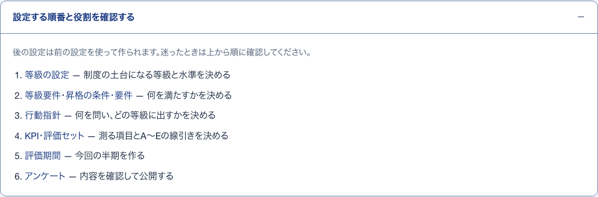

1設定する順番と役割開いて見る
S11 管理者のホーム ・ 押すもの: 「設定する順番と役割を確認する」

中に出るもの
- 後の設定は前の設定を使って作られる
- 等級の設定 — 等級と水準
- 等級要件・昇格の条件・要件 — 満たすこと
- 行動指針 — 問うことと出す等級
- KPI・評価セット — 測る項目と線引き
- 評価期間 — 今回の半期
- アンケート — 確認して公開
中で押せるもの
- 等級の設定: 等級の設定へ移る（→ S13）
- 等級要件: 等級要件へ移る（→ S14）
- 昇格の条件・要件: 昇格の条件・要件へ移る（→ S15）
- 行動指針: 行動指針へ移る（→ S16）
- KPI・評価セット: KPI・評価セットへ移る（→ S17）
- 評価期間: 評価期間へ移る（→ S27）
- アンケート: アンケートへ移る（→ S28）
2仮置きの札説明
S11 管理者のホーム ・ 押すもの: 「仮置き」 ・ 閉じる: マウスを離す
中に出るもの
- 制度として未確定のため、叩き台の初期値を入れています。
3経過日数の数え方開いて見る
S11 管理者のホーム ・ 押すもの: 「経過日数の数え方」
中に出るもの
- 経過日数は評価期間の終了日から数える
- この知らせで確定済みの評価は変わらない
- 公開済みのアンケートも変わらない
4この順番で進める理由開いて見る
S12 制度設定ガイド ・ 押すもの: 「この順番で進める理由」
中に出るもの
- アンケートの設問と昇格要件はここで保存した内容から作られる
- 先にアンケートを作ると、あとで直しても作成済みの版には反映されない
5残りの足りないもの開いて見る
S12 制度設定ガイド ・ 押すもの: 「残り」 ・ 閉じる: 残りn件を見る
中に出るもの
- 足りないもの
- 直し方
- 直す画面へのリンク
中で押せるもの
- 〇〇のKPIを選ぶ: 使うKPIを選ぶへ移る（→ S18）
- 〇〇の基準を決める: 選んだ項目の基準を決めるへ移る（→ S19）
- KPI・評価セットを開く: KPI・評価セットへ移る（→ S17）
6確定済みの評価が動かない理由開いて見る
S13 等級の設定 ・ 押すもの: 「確定済みの評価が動かない理由」
中に出るもの
- 確定済みの評価は判定した当時の値を控えている
- そのため現在の基準では集計し直さない
7変更が反映される範囲開いて見る
S14 等級要件（支援・運営） ・ 押すもの: 「変更が反映される範囲」
中に出るもの
- 回答の無い下書きに反映する
- 回答のある公開中のアンケートには次の版の下書きを作る
- 締め切った期のアンケートは変えない
- 公開済みの設問と確定済みの評価は残る
- 既存の評価は集計し直さない
8達成率の出し方開いて見る
S14 等級要件（支援・運営） ・ 押すもの: 「達成率の出し方」
中に出るもの
- 等級要件達成率は 達成した項目数 ÷ 登録した項目数
- 項目を増やすと分母も増える